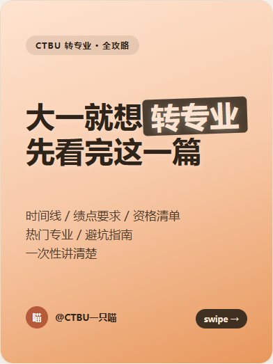
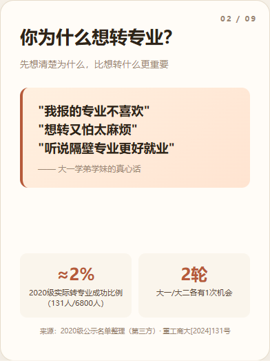
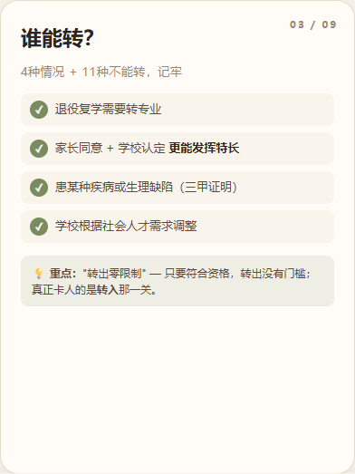
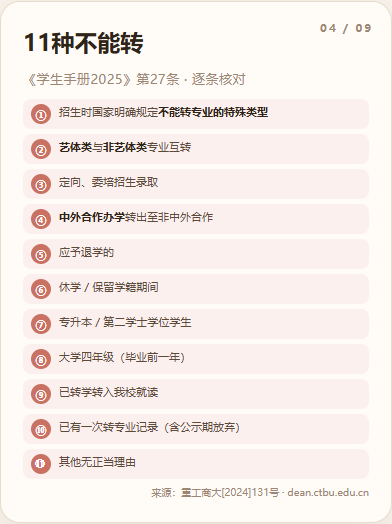
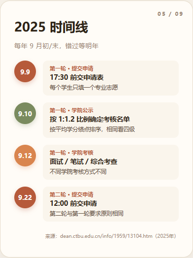
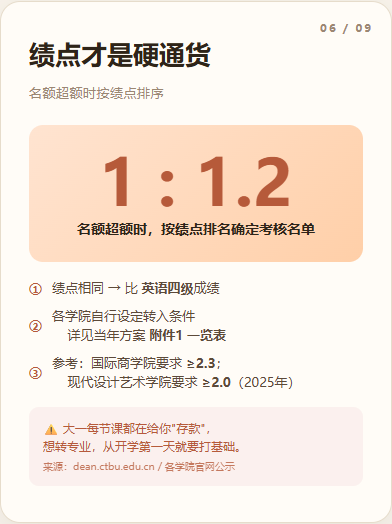
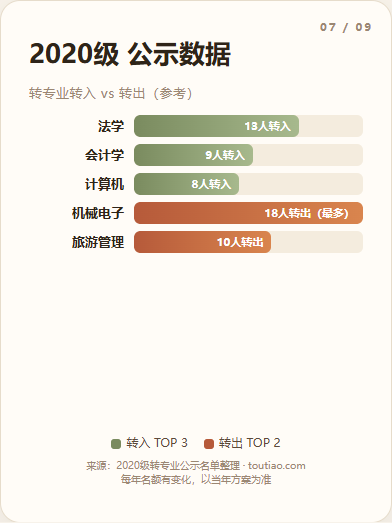
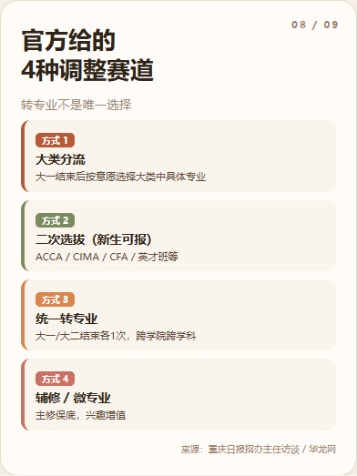
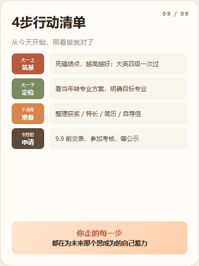

很多新生报到前就想着："要是专业不合适，我就转。"但转专业不是想转就能转——它有明确的时间窗口、绩点门槛和负面清单。这篇文章把重庆工商大学转专业的官方规则和真实数据整理成 9 张图，帮你从"想转"变成"能转"。

一、先问为什么：转专业不是跟风
"专业不喜欢""隔壁专业更好就业"——这些理由很常见，但转专业前请先想清楚：你是真的不喜欢，还是只是听别人说不好？因为转专业成功后，大一的成绩不一定能完全互认，补修、降级、适应新课程都会是成本。

二、谁能转？4种情况 + 11种禁区
学校对"转出"相对宽松，真正卡人的是"转入"学院的考核。符合以下 4 种情况之一可以申请：退役复学需转专业、家长同意+学校认定更能发挥特长、患病或生理缺陷有三甲证明、学校根据社会人才需求调整。

同时有 11 种情况明确不能转，包括：艺体类与非艺体类互转、定向/委培生、中外合作办学转出至非中外合作、休学/保留学籍期间、专升本/第二学士学位、大四（毕业前一年）、已有一次转专业记录等。详见《学生手册2025》第27条。

三、2025 时间线：每年9月初/末，错过等明年
转专业集中在每年秋季学期开学初。第一轮 9 月 9 日 17:30 前交申请表，每个学生只填一个专业志愿；9 月 10 日学院按 1:1.2 公示考核名单；9 月 12 日学院考核（面试/笔试/综合考查，各学院不同）；9 月 22 日第二轮提交申请，12:00 前截止。两轮规则相同。

四、绩点才是硬通货
名额超额时，按绩点排名确定考核名单。绩点相同则比英语四级成绩。各学院自行设定转入条件，例如国际商学院要求 ≥2.3，现代设计艺术学院要求 ≥2.0（2025年数据）。大一每节课都在给未来"存款"，想转专业从开学第一天就要开始积累绩点。

五、真实数据：转入转出 TOP 专业
参考 2020 级公示数据，转入人数前三为法学（13人）、会计学（9人）、计算机（8人）；转出人数最多的是机械电子（18人）、旅游管理（10人）。每年名额有变化，具体以当年方案为准，但数据能帮你判断竞争激烈程度。

六、转专业不是唯一选择：4种调整赛道
如果转专业风险太高或条件不符，还有 4 条官方调整赛道：大类分流（大一结束后按意愿选具体专业）、二次选拔（新生可报的 ACCA/CIMA/CFA/英才班等）、统一转专业（大一/大二结束各1次）、辅修/微专业（主修保底，兴趣增值）。

七、4步行动清单：从今天开始照着做
把想转专业变成能转专业，拆成 4 步：大一上死磕绩点、越高越好，英语四级争取一次过；大一下看当年转专业方案，明确目标专业；7-8月整理获奖/特长/简历/自荐信；9月初前交表、参加考核、等公示。

转专业信息每年会微调，最终请以学校教务处/当年转专业方案为准。本文数据仅供提前规划参考，不要拿旧规则硬套新政策。
"你走的每一步，都在为未来那个想成为的自己蓄力。" 愿你不是因为逃避现在的专业，而是为了真正靠近想做的事。